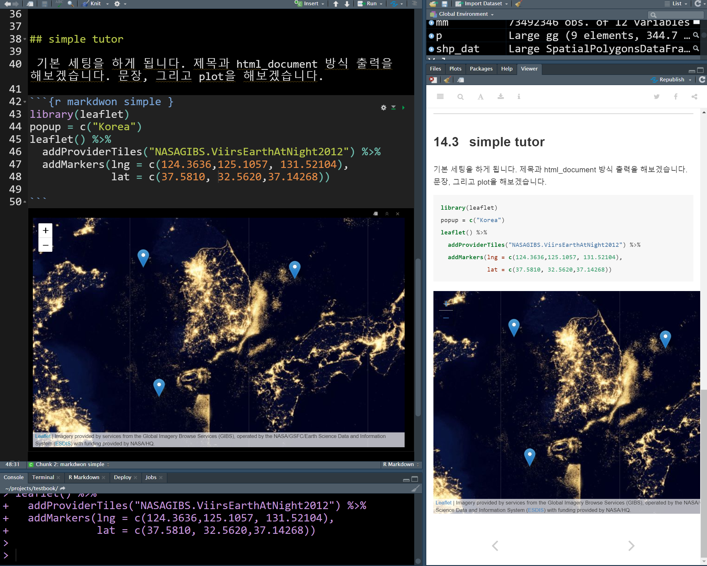
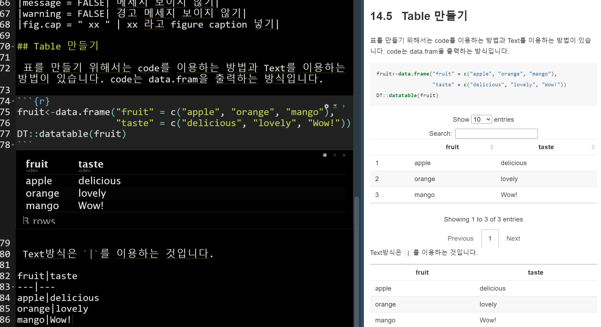

install.packages("rmarkdown")14 R markdown
R마크다운은 마크다운을 R에서 사용하기 쉽게 한 프로그램입니다. 마크다운은 자주 사용되는 문서 형태로, 기존의 문서 보다는 웹, 상호작용, 표, 그림 등에서 더 유용합니다. 데이터과학에서 상화 협업을 위해서 마크다운은 자주 사용되는 문서 형태입니다.
마크다운은 https://rmarkdown.rstudio.com 에서 tutorial 을 30분 정도 해보시는 것을 추천합니다. 본 쳅터에서는 가장 기본 적인 것을 위주로 설명하겠습니다.
| 마크다운 안내 | 내용 |
|---|---|
| rstudio.com | https://rmarkdown.rstudio.com |
| lecture 1 | |
14.1 설치
설치는 다른 페키지 설치와 같습니다. 아래의 install.packages()명령을 통해 설치해 봅니다 .
그리고 Cheatsheet을 이용하여 공부하면 됩니다. 다시 말하지만, 외우기 보다는 필요한 내용만 그때 그때 사용하시는 것을 권장합니다.
14.2 3 components
R마크다운은 3가지 요소로 구성됩니다. 하나는 YAML, Text, 그리고 Code 입니다.
| 구성 | 내용 |
|---|---|
| YAML | 모양, 기본 구조, 출력 폼 등 |
| Text | 기본 문장, 워드 등과 동일 |
| Code | R code, Python code 등 |
14.3 simple tutor
기본 세팅을 하게 됩니다. 제목과 html_document 방식 출력을 해보겠습니다. 문장, 그리고 plot을 해보겠습니다. 지도 및 위치정보 시각화는 Dspub-Project 에서 다루게 됩니다. 여기서는 그냥 leaflet 페키지를 이용해서 가능하다 정도 알아두시면 되겠습니다. leaflet 페키지가 설치가 않되시는 분은 그림을 출력하는 png, 지형출력 raster 등이 설치 되지 않아 그럴 수 있습니다. 이는 지도 쳅터 부분에서 leaflet 페키지 설치 부분을 참조해 주세요. leaflet
아래와 같은 코딩으로 상기 화면이 출력됩니다.
library(leaflet)
popup = c("Korea")
leaflet() %>%
addProviderTiles("NASAGIBS.ViirsEarthAtNight2012") %>%
addMarkers(lng = c(124.3636,125.1057, 131.52104),
lat = c(37.5810, 32.5620,37.14268))
즉 글을 쓰고, chunck를 만들고 그 안에 R code를 적으면 됩니다. chunck 는 crtrl + alt + i를 사용하면 생성됩니다.
14.4 chunck option
chunck 에 몇가지 옵션을 설정할 수 있습니다. 이는 r{ } 의 괄호 안에 넣으면 됩니다.
| chunck option | 내용 |
|---|---|
| include = FALSE | 마크다운 파일에 넣지 않기 |
| echo = FALSE | 코드는 보여 주지 않고 결과만 보이기 |
| message = FALSE | 메세지 보이지 않기 |
| warning = FALSE | 경고 메세지 보이지 않기 |
| fig.cap = ” xx ” | xx 라고 figure caption 넣기 |
14.5 Table 만들기
표를 만들기 위해서는 code를 이용하는 방법과 Text를 이용하는 방법이 있습니다. code는 data.fram을 출력하는 방식입니다.
fruit<-data.frame("fruit" = c("apple", "orange", "mango"),
"taste" = c("delicious", "lovely", "Wow!"))
DT::datatable(fruit)Text방식은 |를 이용하는 것입니다.
| fruit | taste |
|---|---|
| apple | delicious |
| orange | lovely |
| mango | Wow! |

14.6 필독!
마크다운은 설명하기가 쉽지 않네요! 반드시 아래 홈페이지를 들어가서 보시기 바랍니다.
| 마크다운 안내 | 내용 |
|---|---|
| rstudio.com | https://rmarkdown.rstudio.com |
| lecture 1 | |
14.7 동영상
글로 설명하기 어렵네요, 아래의 동영상을 보고 해보세요!
14.8 과제
아래 과제 내용을 읽고 해보세요!
| 과제 | 내용 |
|---|---|
| 데이터 테이블 | 기존 강의에서 table 1 마크 다운에 표시시 |
| 그림(plot) | 아무 plot이나 그리기 |
| 우리나라지도 | 우리나라 지도 보여주기 |
| html파일 저장하기 | 저장한 파일 업로드 |